¿Tu panza no vuelve después del parto? No es falta de ejercicio.
Descubre en 2 minutos por qué tu panza sigue abultada aunque hagas todo bien, y el reto de 10 minutos al día para reactivar tu abdomen en 21 días.
¿Tienes alguno de estos síntomas?
Panza inflada que no baja ni con dieta
Se te sale la pipí al reír, estornudar o brincar
Panza flácida y caída después del parto
Dolor de espalda que no se quita
Panza que parece que sigues embarazada
Puede ser diástasis: los músculos del abdomen se separan durante el embarazo y no siempre vuelven solos a su lugar. Le pasa a 6 de cada 10 mamás.
🔒 Tus respuestas son 100 % privadas y anónimas
Pregunta 1 de 12
¿Cuántos años tienes?
Nos ayuda a entender tu momento y armar el camino ideal para ti.
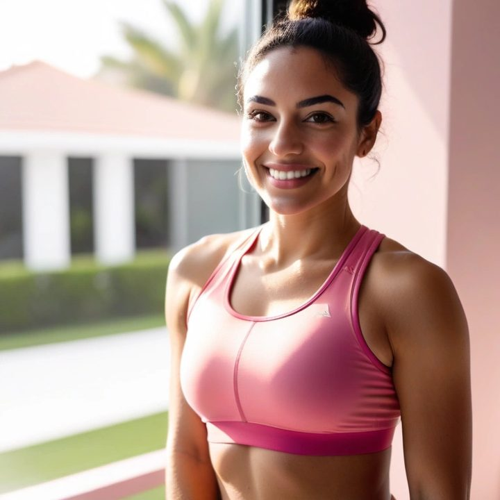
18 a 25
26 a 32
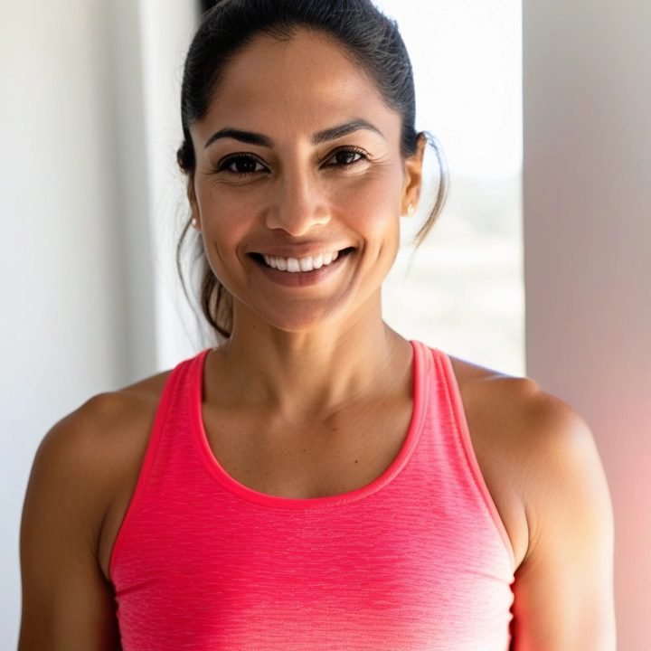
33 a 39
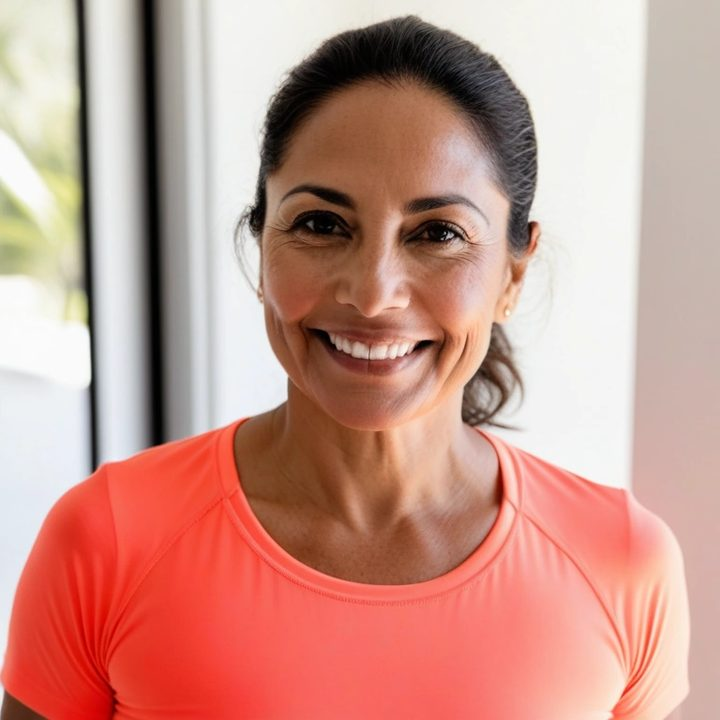
40 a 48
49 o más
Pregunta 2 de 12
¿Hace cuánto tuviste a tu último bebé?
Es clave para entender en qué etapa está tu abdomen.
🍼
Menos de 6 meses
Posparto reciente
👶
De 6 meses a 2 años
Etapa de recuperación
🧒
De 2 a 5 años
Tu abdomen todavía puede responder
👦
Más de 5 años
Nunca es tarde para empezar
Pregunta 3 de 12
¿Cómo fue tu parto?
Cada tipo de parto deja un patrón diferente en el abdomen.
🌿
Parto natural / vaginal
Con o sin anestesia
🏥
Cesárea
Con guía especial para cesárea
👩👧👦
Tuve más de un bebé
Partos diferentes a lo largo del tiempo
Pregunta 4 de 12
¿Cuáles de estos síntomas sientes seguido?
Marca todos los que te pasan.
💧
Se me sale la pipí al reír, estornudar o toser
🎈
Panza siempre inflada, aunque no haya comido
🫀
Dolor de espalda o de cintura constante
😔
Dolor o molestia en la intimidad
🤰
Mi panza parece que sigo embarazada
🧱
Estreñimiento seguido
Pregunta 5 de 12
¿Qué has probado para bajar la panza?
Marca todo lo que has hecho. Así entendemos por qué no te funcionó.
🥗
Dieta o comer más sano
🏋️
Gimnasio o abdominales normales
🩱
Faja posparto o cinturilla
❄️
Tratamientos estéticos (masajes, aparatos)
💊
Pastillas o suplementos
🤷
Nada todavía, no sabía qué hacer
💛
No estás sola.
Las dietas y los abdominales normales no arreglan la panza de mamá. Los abdominales de toda la vida incluso pueden empujar la panza hacia afuera. No es falta de voluntad: nadie te explicó qué está pasando dentro de tu abdomen.
Hay un músculo profundo, el transverso, que funciona como una faja natural. Se activa de una forma muy específica, con la respiración. Cuando aprendes a usarlo, tu abdomen empieza a recuperar firmeza de adentro hacia afuera.
Ahora vamos a ver exactamente qué necesitas tú.
Pregunta 6 de 12
¿Cómo te está afectando la panza hoy?
Sé honesta, es clave para armar el reto correcto para ti.
🪞
Evito verme en el espejo
Me da pena mi propio cuerpo
💑
Me alejé de la intimidad con mi pareja
No me siento deseable
👙
Evito la ropa ajustada y el traje de baño
Elijo ropa para taparme
😓
Me baja la autoestima en general
Siento que perdí a la que era
Pregunta 7 de 12
¿Cuánto tiempo al día le puedes dedicar al reto?
Vamos a armar una rutina que de verdad quepa en tu vida de mamá.
⚡
De 5 a 10 minutos
Mientras el bebé duerme, funciona muy bien
⏱️
De 15 a 20 minutos
Avanzas un poco más rápido
🕐
30 minutos o más
Tu reto con rutinas extra
Pregunta 8 de 12
¿Cuál es tu mayor sueño cuando recuperes tu abdomen?
Tu objetivo guía tu reto personalizado.
✨
Verme al espejo y sonreír
Recuperar mi autoestima y quererme
💕
Sentirme deseable otra vez
Reconectar con mi pareja sin pena
👙
Usar traje de baño sin pena
Disfrutar sin esconderme
💪
Que se acaben el dolor y los escapes
Recuperar mi calidad de vida
Pregunta 9 de 12
Del 1 al 10, ¿qué tan lista estás para cambiar esto ahora?
Sé honesta contigo. Esta respuesta define tu reto.
Todavía no sé¡100 % lista!
Pregunta 10 de 12
¿Cómo describirías tu panza hoy?
Elige la opción que más se parece a lo que ves.
🔵
"Pancita" caída debajo del ombligo
Separación baja
🟡
Inflada arriba del ombligo
Separación alta
🔴
Inflada de arriba a abajo
Separación completa
⬜
Flácida, con piel suelta (panza delantal)
Separación con flacidez de piel
Pregunta 11 de 12
¿Cuál es tu peso actual?
Usa el valor más cercano. Nos ayuda a calcular tu proyección personalizada.
70kg
Pregunta 12 de 12
¿Cuánto mides?
Nos ayuda a calcular tu medida ideal con precisión.
160cm
Ya casi
¿Cuál sería tu peso ideal?
El peso en el que te sentirías más segura y cómoda.
60kg
Meta: bajar 10 kg
Ya casi
¿Hay alguna ocasión especial que te motive?
Nos ayuda a armar tu motivación diaria.
💍
Una boda
✈️
Un viaje
💼
Volver al trabajo
📸
Fotos con mi bebé
🎄
Las fiestas de fin de año
💗
Ninguna en especial
Último paso
¿En cuánto tiempo te gustaría ver resultados?
Así organizamos cómo seguir tu avance en ese plazo.
⚡
4 semanas
Ver tus primeros cambios
🌱
8 semanas
Avanzar con constancia
🌸
12 semanas
Ir a tu ritmo, con más tiempo
Estamos creando tu plan personalizado…
Cruzando tus respuestas para identificar tu tipo de panza de mamá
Iniciando análisis…
1
Identificando tu tipo de separación…
2
Cruzando síntomas y tipo de parto…
3
Calculando tu proyección personalizada…
4
Armando tu reto de 21 días…
5
Terminando tu diagnóstico completo…
"A los 21 días mi panza ya se sentía muy diferente, más firme."
Daniela M. · Monterrey, N.L.
"Ya no reconocía mi panza. Hoy me pongo ropa que tenía guardada."
Karla S. · Guadalajara, Jal.
🎯
¡Diagnóstico listo!
Tu perfil responde muy bien al reto.
¿Cómo te llamamos?
Tu nombre aparece en tu diagnóstico personalizado.
Escribe tu nombre para ver tu diagnóstico.
🔒 Tu información está 100 % segura. Sin spam.
Tu resultado puede empezar hoy
Tú puedes sentir tu abdomen más firme desde la primera semana con el Reto Panza de Mamá 21
Los resultados varían. Compara tu medida del día 1 con la de la primera semana.
Tu indicador de separación abdominal
LeveModeradaAvanzada
Tu grado estimado: Moderado a avanzado
Estimación orientativa según tus respuestas, no es un diagnóstico médico. En la app aprendes a medirla con tus dedos.
Tus marcas de seguimiento
Hoy: mide tu separación con los dedos a la altura del ombligo y toma una foto de referencia.
Semana 1: repite la medida en el mismo lugar y compárala con el inicio.
Semana 8: compara tus medidas, tus fotos y cómo te sientes.
Tu plazo marca cuándo comparar. El cambio solo se conoce midiendo, por eso la app te guía a medir.
Tu diagnóstico personalizado
Analizando tus respuestas…
Señales de tu perfil
⚠️ Si no se trabaja, la separación suele seguir igual
Panza abultada aunque bajes de peso
Dolor de espalda y de cintura por falta de "faja" interna
Escapes de orina al reír, toser o cargar a tu bebé
Peor postura y más cansancio al final del día
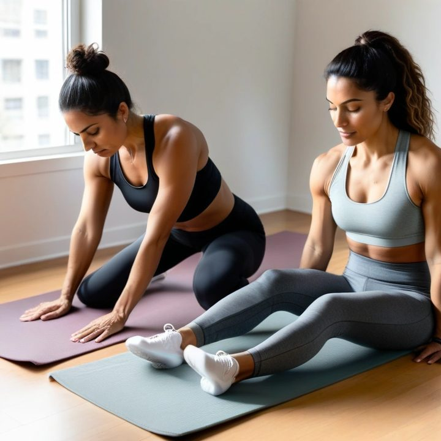
★★★★★
"Hice gimnasio 8 meses después del parto y la panza seguía igual. Cuando empecé con los ejercicios correctos, a las 3 semanas ya notaba la diferencia. El día 21 mi hija me preguntó si había bajado de peso. No bajé de peso: mi abdomen volvió a sostenerme."
Mariana R., 34 años
Mamá de 2 · Houston, TX
★★★★★
"Usaba toalla todos los días. Pensé que era normal después del parto. Cuando supe que era la separación del abdomen y empecé el reto, en 2 semanas los escapes bajaron muchísimo."
Julieta C., 38 años
Mamá de 3 · Ciudad de México
Testimonios ilustrativos. Los resultados varían de persona a persona.
¿Por qué algunas mamás recuperan su abdomen fácil y tú luchas sin ver resultado?
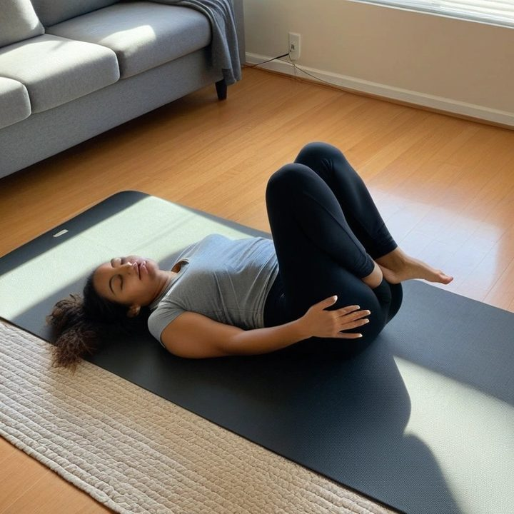
🔥10 minutos al día · En casa
Mientras te esfuerzas con gimnasio y dieta, tu abdomen sigue separado porque el músculo profundo sigue "dormido". La dieta no lo despierta. Los abdominales no lo despiertan. La faja tampoco: solo lo sostiene por fuera.
Resultado: la panza sigue igual, aunque hagas "todo bien".
💚 Con el Reto Panza de Mamá 21 despiertas tu músculo profundo por etapas: respirar bien, activar tu faja natural y fortalecer todo tu abdomen, sin dietas, sin gimnasio y en solo 10 minutos al día.
✦ Historias de mamás ✦
Mamás que ya recuperaron su abdomen
Mira a quienes pasaron por lo mismo que tú
★★★★★
"Después de mi segundo bebé no reconocía mi panza. A las 3 semanas del reto ya sentía mi cintura otra vez. Hoy me pongo ropa que tenía guardada desde hace años."
Carolina S., 29 años
Mamá de 2 · Los Ángeles, CA
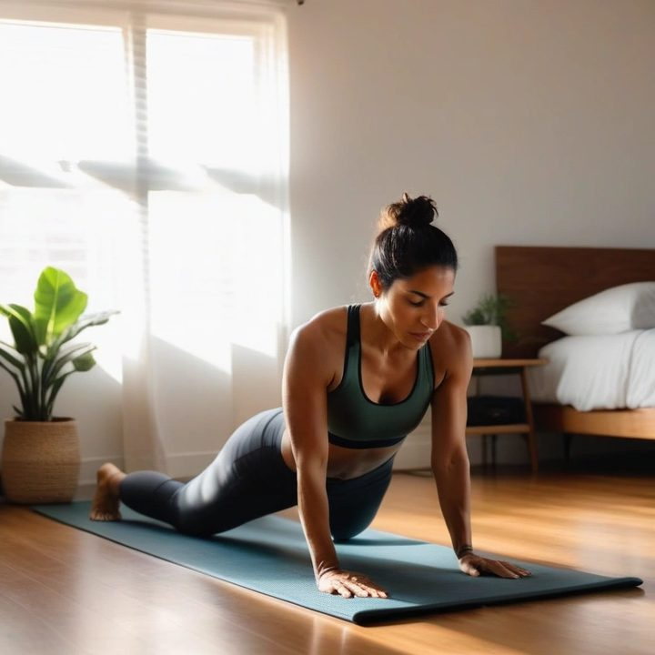
★★★★★
"Me daba mucha pena ponerme de lado en la playa por la pancita. Con 10 minutos al día, en unas semanas sentí la panza mucho más plana. Recuperé mi autoestima."
Brenda O., 31 años
Mamá de 1 · Puebla, Pue.
★★★★★
"Ya me había rendido después de la cesárea. Es lo primero que de verdad me funcionó sin gimnasio ni dietas raras."
Patricia L., 36 años
Mamá de 2 · Phoenix, AZ
★★★★★
"Tenía dolor de espalda todos los días y nadie me decía por qué. Desde que hago el reto, el dolor bajó junto con la panza."
Vanessa N., 33 años
Mamá de 3 · Bogotá, Colombia
Testimonios ilustrativos. Los resultados varían de persona a persona.
✦ Tu plan personalizado ✦
Tu Reto Panza de Mamá 21 personalizado está listo
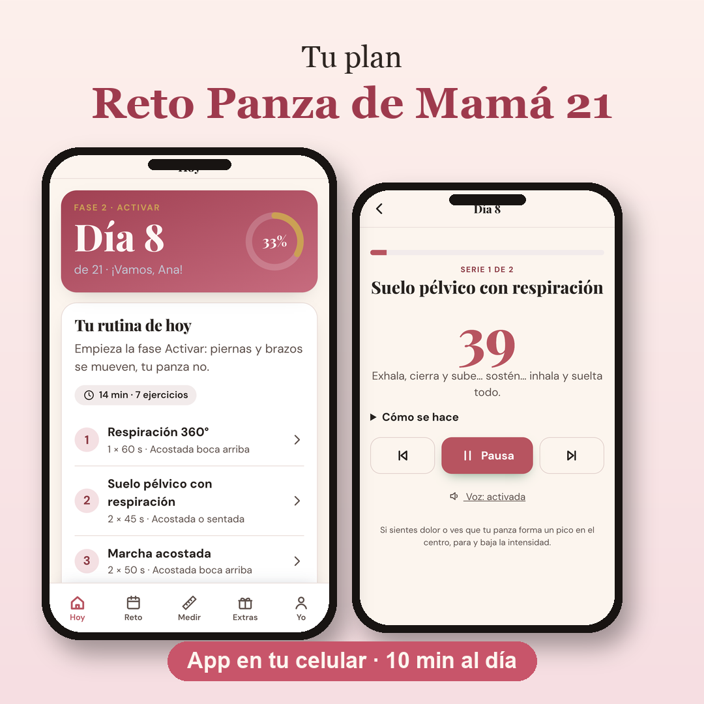
Hoy
Separación abdominal
Alta
Firmeza del abdomen
Baja
Dolor de espalda
Frecuente
En 21 días
Separación abdominal
Menor
Firmeza del abdomen
Alta
Dolor de espalda
Ocasional
Ilustración del objetivo del reto. Los resultados varían de persona a persona.
⚠️ Tu perfil responde bien a la activación del músculo profundo
Las primeras 3 semanas son las que más se notan. Empieza hoy y mide tu avance el día 7.
🏆 EL MÁS ELEGIDO📱 App en tu celular
Reto Panza de Mamá 21 + Bonos
⚡ El camino más rápido para reactivar tu abdomen sin gimnasio, sin dietas y sin cirugía
✅ Lo que incluye tu plan:
App con el reto de 21 días: ejercicios guiados con temporizador, 10 min al día$47
Test de los dedos: mide tu separación y mira tu avance en una gráfica$17
Guía especial para cesárea y separación de hace años$27
Suelo pélvico: adiós a los escapes de pipí$37
BonoLo que NO debes hacer con diástasis$19
BonoRutina express de 5 minutos para los días difíciles$17
BonoPostura al cargar y amamantar a tu bebé$24
BonoRecordatorios diarios en tu celular$9
Valor total: $197 USD
Oferta válida solo por hoy
De $47 USD
$9 USD
🔒 Un solo pago · ≈ 170 pesos mexicanos · Acceso de por vida
Garantía de 30 díasRiesgo CERO. Si en 30 días no sientes tu abdomen más firme, te devolvemos tu dinero. Basta con un correo.
¡Todo en una app fácil, en tu celular!
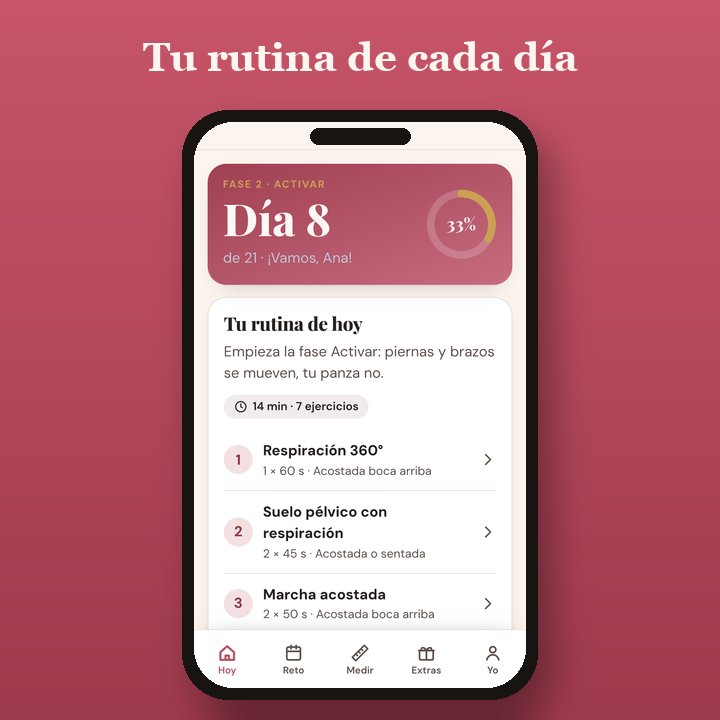
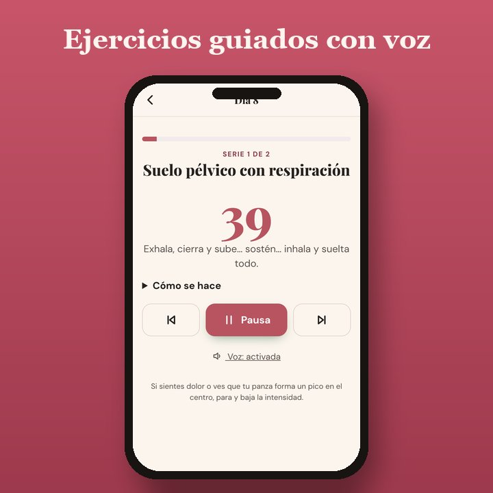
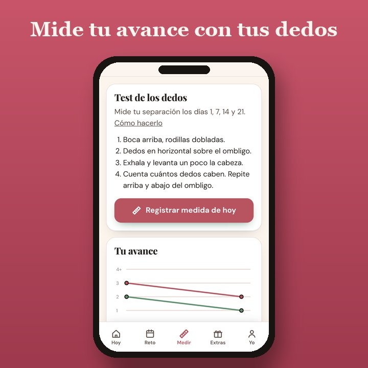
Las que ya empezaron ya notan la diferencia
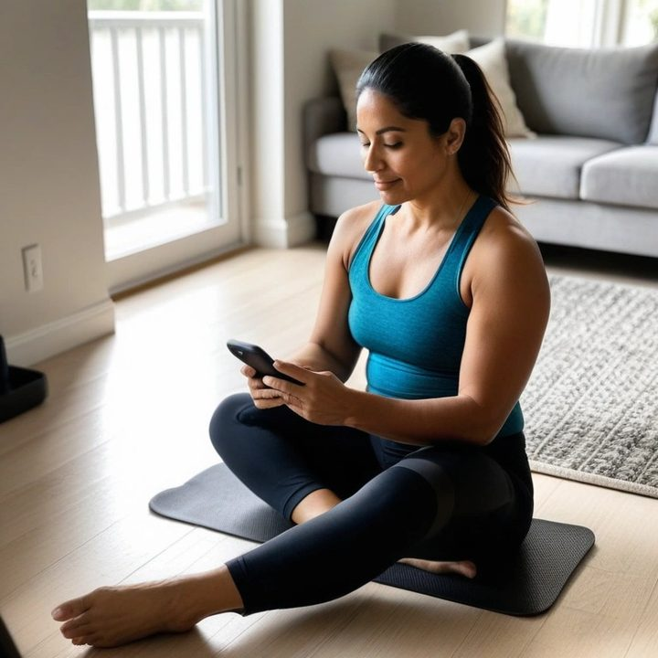
★★★★★
"Lo compré sin muchas expectativas, solo quería que se me quitara el dolor de espalda. No esperaba que mi panza también cambiara tan rápido."
Tatiana R., 35 años
Mamá de 1 · Miami, FL
★★★★★
"Pensé que ya no tenía remedio, mi hijo ya tiene 4 años. En unas semanas sentí mi abdomen más firme. Qué bueno que no me rendí."
Larissa P., 30 años
Mamá de 1 · San Antonio, TX
Testimonios ilustrativos. Los resultados varían de persona a persona.
En resumen…
💧
Tu panza de mamá tiene solución, sin gimnasio, sin dietas y sin cirugía.
⏱️
10 minutos al día bastan para activar el músculo correcto.
📅
Mides tu avance con tus dedos el día 1, el día 7 y el día 21.
🛡️
Tienes 30 días de garantía, sin riesgo para ti.
💛
No estás sola: le pasa a 6 de cada 10 mamás.
Preguntas frecuentes
¿Sirve si tuve cesárea?Sí. Tiene una guía especial para cesárea. Espera a que tu médico te dé de alta (normalmente 8 semanas) antes de empezar.
¿Y si mi bebé nació hace años?También. El músculo profundo se puede entrenar en cualquier momento.
¿Necesito aparatos?No. Todo es en casa, en el piso, con tu celular.
¿Cómo lo recibo?Al pagar te llega un correo con el botón para entrar a tu app. Entras con el mismo correo, sin contraseña, y la instalas en tu celular.
¿Es una suscripción?No. Es un solo pago de $9 USD y es tuyo para siempre.
Hecho para mamás10 minutos al díaSin aparatos
El Reto Panza de Mamá 21 junta los ejercicios que se usan en la recuperación del abdomen después del parto (respiración, activación del transverso, suelo pélvico y fuerza suave) en un plan de 21 días que cabe en la siesta de tu bebé. Estás a un clic de empezar el camino que no solo cambia tu panza: también te devuelve la seguridad y la energía. No dejes para después lo que puedes empezar hoy.
🔒 Compra segura · Acceso inmediato a tu app · Satisfacción garantizada
Aviso médico: este reto es educativo y no sustituye la consulta con tu médico o fisioterapeuta de suelo pélvico. No es un diagnóstico. Espera el alta médica (unas 6 semanas tras parto vaginal y 8 tras cesárea). Si notas un bulto que sale por el ombligo, dolor, sangrado o una separación de más de 3 dedos, consulta antes de empezar. Si estás embarazada, no lo hagas sin indicación profesional.